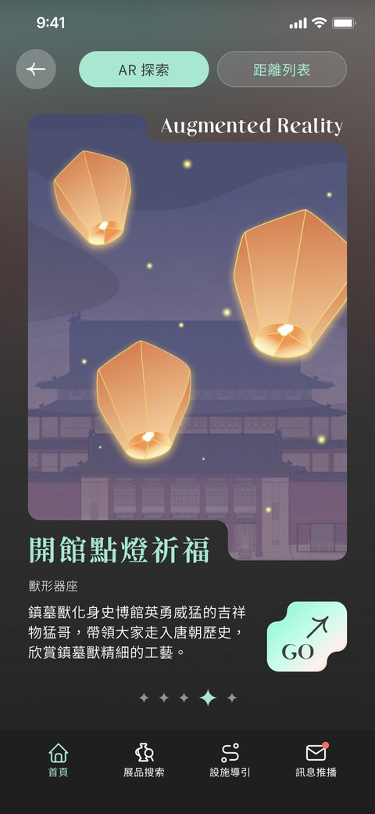
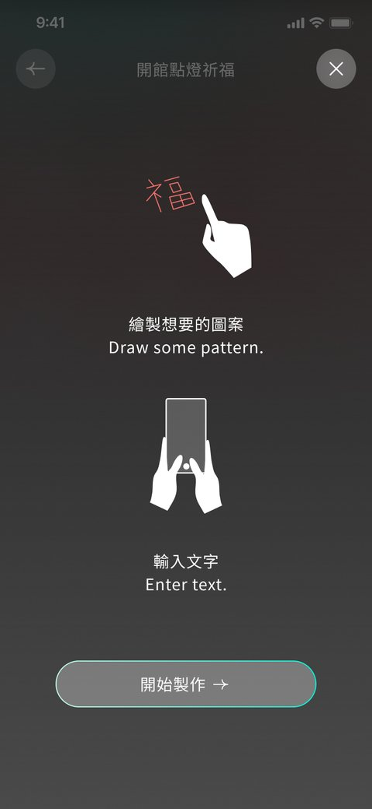
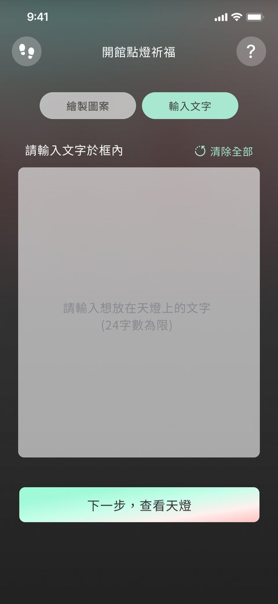
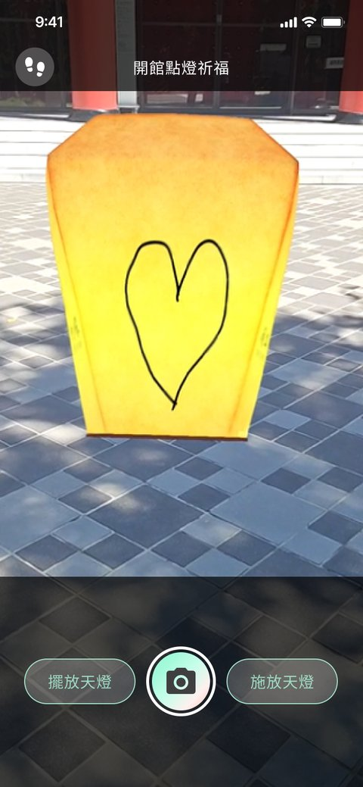
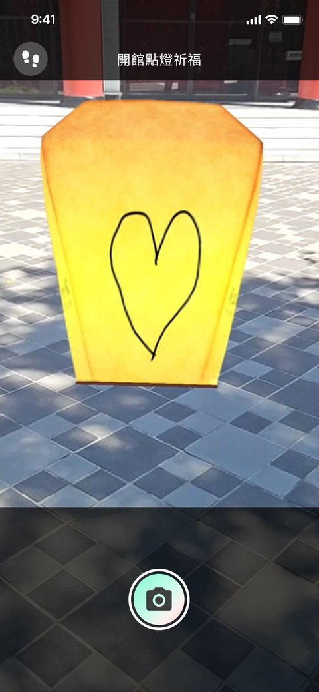
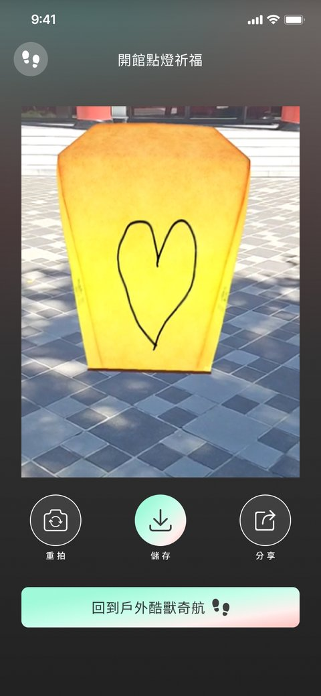
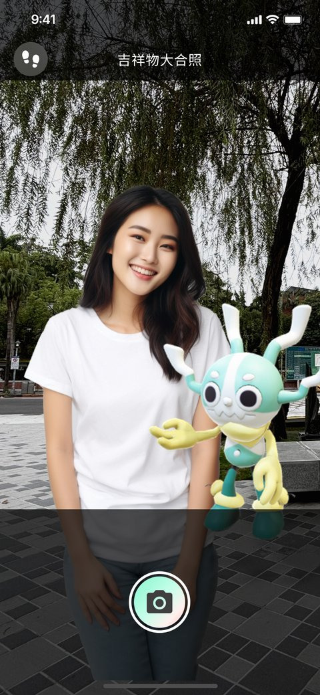
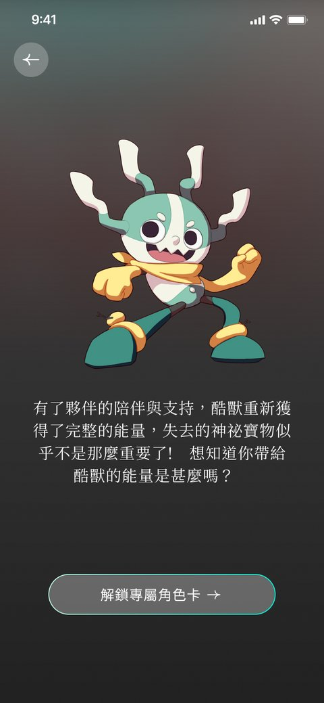
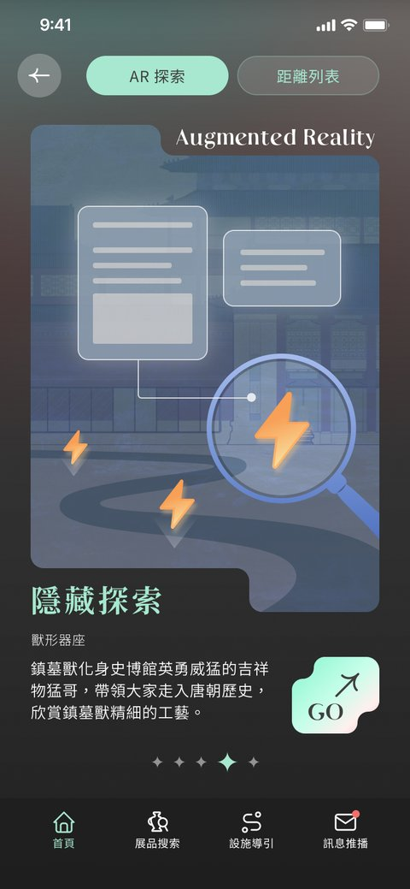

為重新開館的史博館設計戶外 AR 遊歷體驗，將庭院空間轉化為遊戲化探索場域，用虛擬吉祥物「酷獸」領著遊客一步步解鎖屬於自己的博物館旅程。
重新開館後的史博館希望戶外庭院不只是動線的一部分，而能成為吸引親子與年輕族群停留、互動的體驗場域，同時得兼顧原有文物與建築的莊重氛圍。
我設計了 4 款 AR 互動關卡，並以虛擬吉祥物「酷獸」作為引導角色，讓遊客循序解鎖庭院裡的每個角落；同時承接館方 App 功能模組擴充需求，確保新體驗能自然融入既有系統。
戶外庭院從單純的動線空間，轉變為遊客願意駐足探索的遊戲化場域，也讓歷史博物館的文化內容以更輕鬆、更具互動感的方式被年輕世代看見。
從庭院入口到四款 AR 互動關卡，這是「酷獸」帶著遊客一路探索史博館的實際畫面。


體驗流程 · 開館點燈祈福 Lantern Blessing Flow

AR 啟動
走入戶外庭院，開啟天燈祈福關卡

操作教學
簡單手勢提示，降低操作門檻

手寫祈福
在天燈上寫下自己的祝福文字

選擇施放
選定天燈擺放與施放的位置

天燈升空
AR 天燈緩緩升起，與夜空融為一體

拍照留念
完成祈福，生成專屬紀念畫面

酷獸大合照
與虛擬吉祥物合影拍貼，妝點專屬貼圖

角色卡片蒐集
完成關卡解鎖收集卡，稀有度 ★—★★★★★

AR 隱藏關卡
庭院中的隱藏資訊點，探索彩蛋內容